Case Study — Field Operations
WasteMart is a field operations platform designed to support drivers throughout the working day — from managing assigned jobs and checking into client sites to capturing operational details, uploading manifests, recording evidence, and closing out the shift.
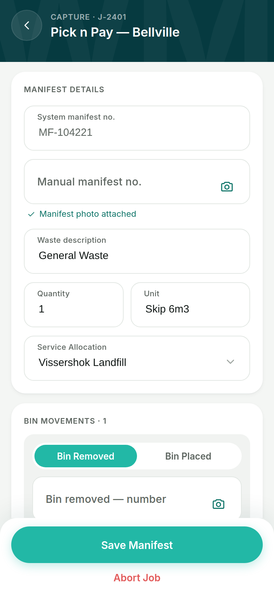
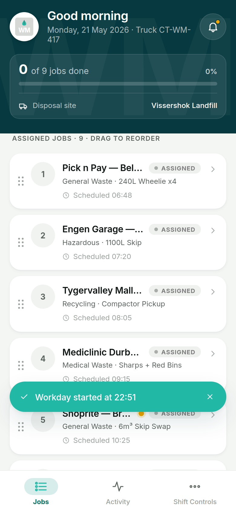
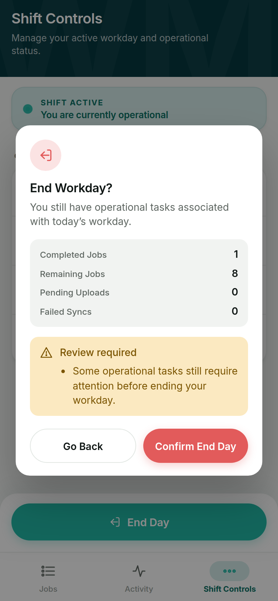
The brief
It was to design a system that could support complex operational processes while remaining clear, fast, and dependable in the field — and stay defensible when someone other than the driver has to review what happened.
The problem
Waste collection is not a single task. A driver's day can involve:
These activities are connected. A mistake or missing piece of information in one part of the workflow can create operational problems later — sometimes hours later, sometimes for someone other than the driver.
The product needed to help the driver understand four things at any point in the day:
The design challenge
The product had to balance four competing needs:
Support detailed workflows and operational records.
Field workers should not fight through unnecessary navigation.
Manifests, bin numbers, evidence and sign-offs captured correctly.
Understandable and usable when connectivity is unreliable.
The real design question was not "how do we make the app easier to use?" It was: how do we make a complex operational system feel predictable while the user's environment is anything but — and while someone in an office, hours later, has to be able to trust what it recorded?
Designing for the person reviewing the record — not just the person creating it — became the thread that runs through everything below.
The product model
The most important design decision was to give the product a clear operational backbone. The user always has a place to understand what is assigned, what is active, what is complete, what needs attention, and what still needs to sync.
01 — The workday starts with the jobs
Rather than presenting a generic list of tasks, the interface gives the driver a clear view of the working day: assigned jobs, current progress, the active job, completed work, operational status, client information, and scheduled timing.
The workflow is intentionally visible. Each state determines the next meaningful action — the interface does not ask the driver to decide what to do next. The system guides them by changing the primary action based on the job's current state.
Try it — the primary action follows the job state
02 — Job details
Once a driver opens a job, the experience brings together everything needed to understand the current operational context: client, location, waste type, service details, vehicle information, operational notes, workflow progress, and activity history.
The system is not only recording what happened — it is helping the driver understand where they are within the process. It also distinguishes between a client note (site-specific context) and an ops instruction (something dispatch specifically wants flagged), each with its own visual treatment so the two don't get mixed up in a busy moment.
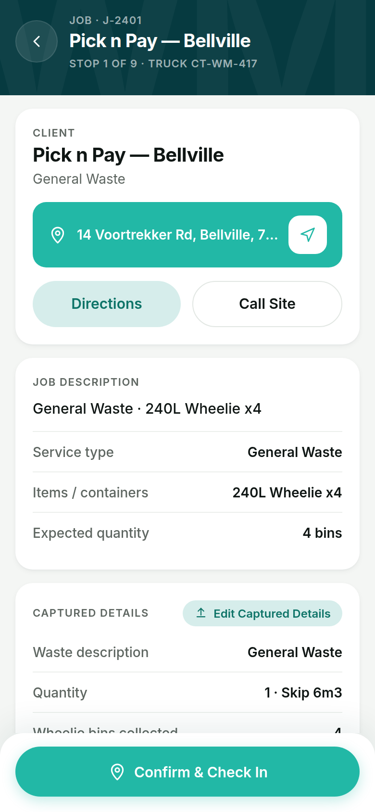
03 — Capturing operational reality
The capture workflow brings together everything required to create a reliable operational record: waste type, quantity, disposal allocation, bin number, barcode information, recycling bag information, manifest evidence, bin photographs, and customer sign-off — structured around the job.
04 — Evidence
Operational work needs proof, and not all proof looks the same. Treating "evidence" as a single feature would have flattened four genuinely different capture problems into one — so the system treats them as distinct flows, each producing a different kind of trust.
Proof the paperwork was handled
A dedicated capture state for the paperwork itself, with framing guidance, retake capability, and save confirmation. The record shows "Manifest photo attached" the moment it's secured.
Proof of which bin
Multiple photographs per bin movement — removed and placed are tracked separately, because a bin swap is two events, not one, and each can need its own supporting photo.
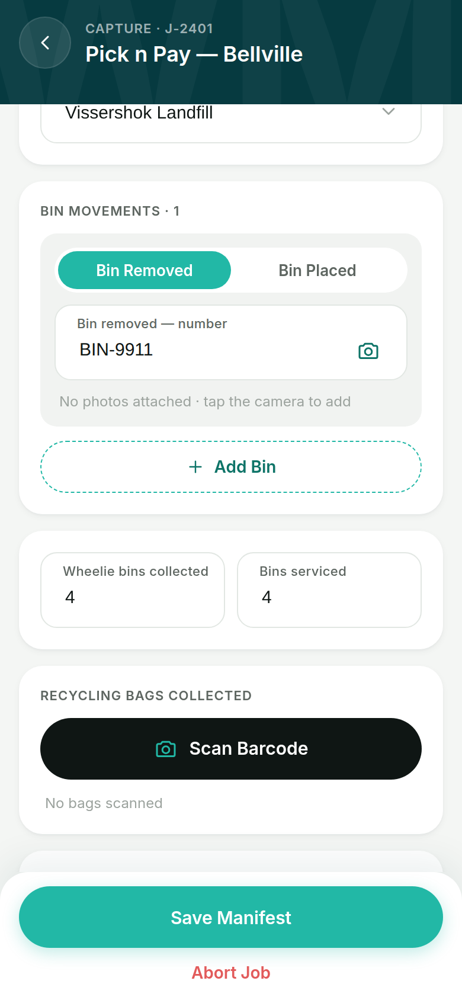
Proof of what was collected, and from where
A dedicated barcode-scanning flow with a customer/site lookup, waste-type tagging, and optional weight capture — building a running list of bags collected in the session rather than a single tally.
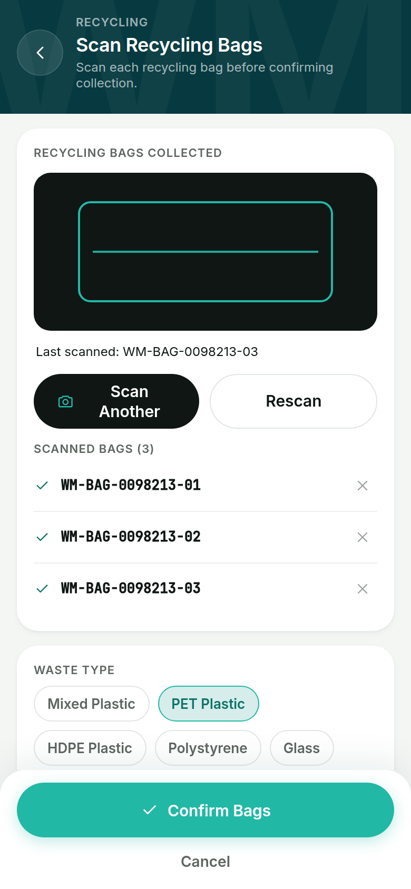
Proof the customer agreed
A drawn signature captured on-canvas, not a checkbox — gating the manifest so it cannot be saved without it. Designing the four flows separately keeps each piece of proof legible on its own, which matters when someone in an office is reconstructing what happened without having been there.
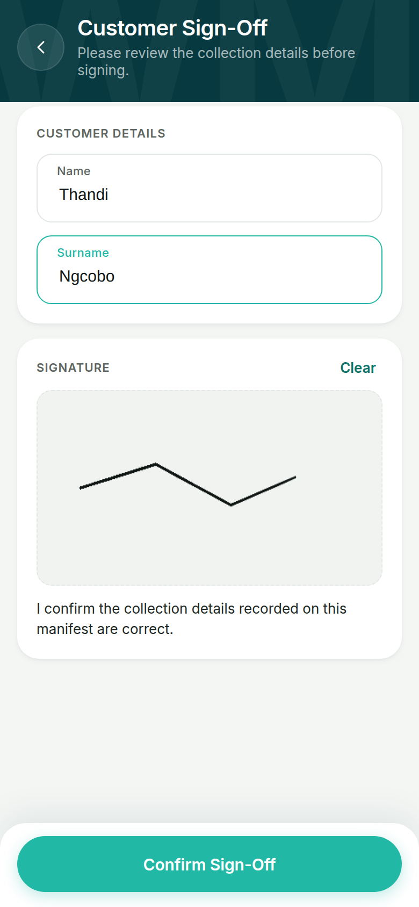
05 — Verification
The system knows the expected bin number. The driver enters or scans a different one. Instead of a hard stop, the interface communicates the discrepancy directly and lets the driver re-check, continue, or flag it for Operations review.
A field environment is messy; the product should be able to represent reality rather than forcing reality to fit the interface.
06 — Correcting the record
Field data is captured once, but it isn't always correct the first time — a bin number gets mistyped, a quantity gets revised after a supervisor call. Most systems either lock everything permanently (punishing honest correction) or allow silent edits (destroying trust in the record). WasteMart does neither.
While a job is in progress, captured details are editable. Once complete, the record locks — but a driver can still request a correction, and every change is written as an explicit audit entry, visible inline against the field it changed.
A reviewer looking at a completed job three weeks later doesn't just see the current numbers — they see the history of how those numbers got there, and who touched them. That's what makes a field-ops record usable as evidence, not just a status log.
07 — Offline-first thinking
Connectivity is not always guaranteed. The system makes synchronisation visible without making it the centre of the experience — a subtle persistent strip supports Online, Syncing, Offline (queued locally) and Sync Failed states, so the driver never has to wonder whether their work disappeared.
Tap a state — the strip is how the driver sees it
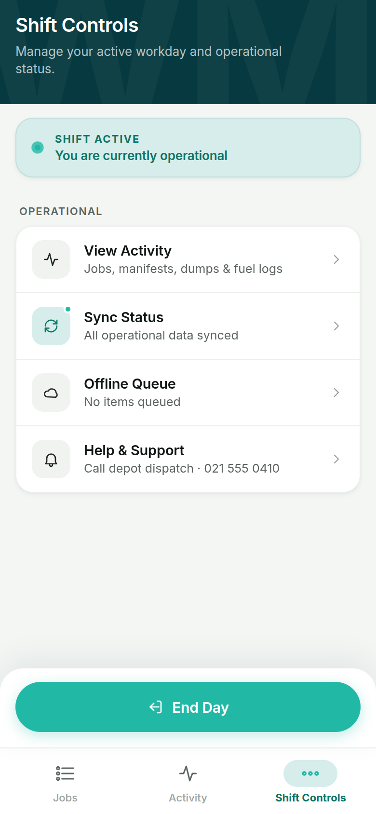
08 — Managing the operational record
Beyond the core job workflow, the Activity area gives drivers access to dump records and fuel activity: reviewing previous entries, filtering by status, searching, creating new records, and linking completed jobs to disposal events.
The system distinguishes between records that are synced, queued, or failed — extending the product beyond simple job completion into a record of the entire working day.
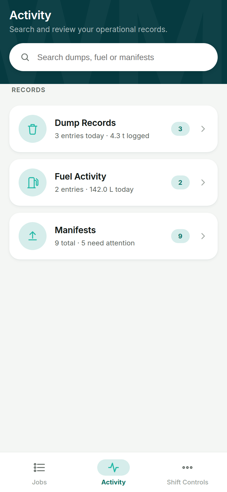
09 — Ending the day isn't a button
An early or incomplete close-out is exactly the moment operations teams need the most information — and the moment a driver is most likely to want to rush. Tapping End Day opens an operational review: jobs completed, jobs remaining, pending uploads, and failed syncs, laid out plainly before anything is confirmed.
If everything is clean, one clear confirmation. If it isn't, the path changes — and choosing to end anyway doesn't quietly wave incomplete work through. It opens a second, more deliberate sheet: an unresolved-items summary, a required reason code, and an optional note for context. Only then can the day close.
Whoever reviews the day afterward doesn't just see that something was left incomplete — they see why, in the driver's own words. A moment that's usually just a data gap becomes a small, structured handoff between the driver and the office.
29 screens · one working system · a few of them ↓
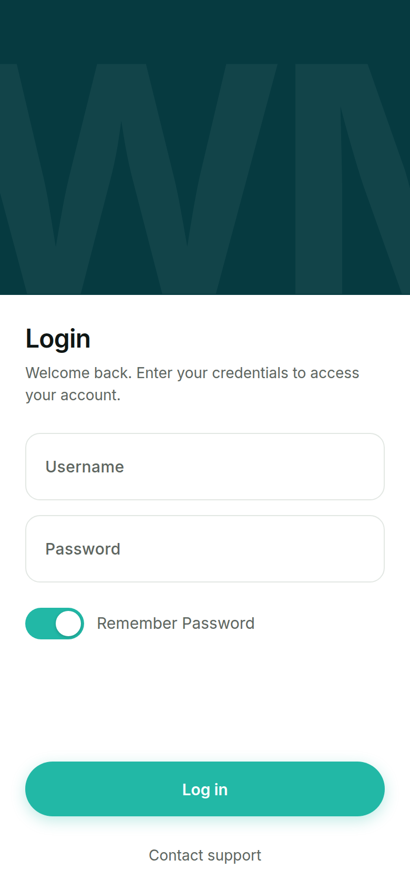
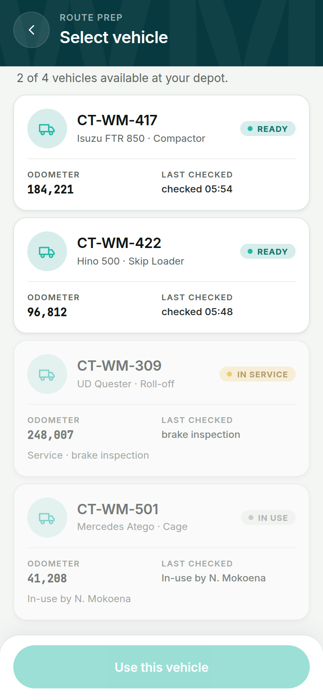
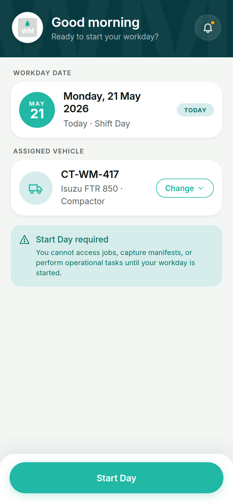
The design system
Strong hierarchy, high-contrast action states, clear status indicators, consistent card patterns, large touch targets, predictable navigation, and restrained colour — built on a proper token system rather than one-off styling per screen, so the 29 screens stay visually consistent under real iteration.
8 · 16 · 24 · 40 · 64 — large touch targets by default.
The language supports a hierarchy between primary action (what needs to happen next), operational status (what state the work is in), and supporting information — particularly important on mobile, where the driver may be working under time pressure.
The core UX principle
One job. One next action.
At any point in the workflow, the driver should understand what has happened, what is happening, and what happens next. They should not need to remember which step they completed, which information is missing, which button they need next, or whether the system saved their work. The product should communicate that state — always.
The result
Reflection
The product manages multiple jobs, operational states, four kinds of evidence, exceptions, synchronisation, and incomplete work — but the driver using it shouldn't have to carry all of that in their head. The role of the interface is to make the next right action clear, and the role of the record it leaves behind is to make the day defensible to someone who wasn't there.